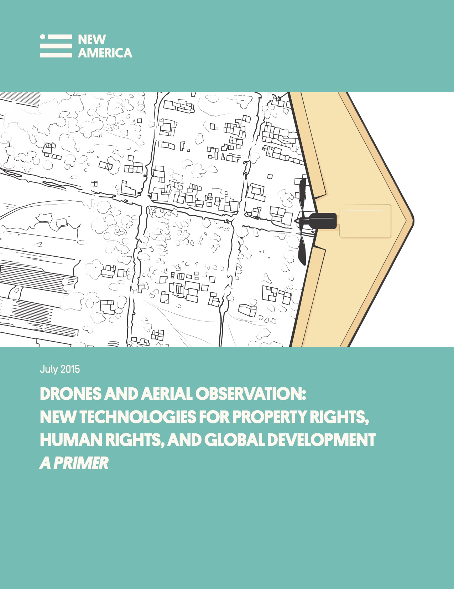

Clear and secure rights to property—land, natural resources, and other goods and assets—are crucial to human prosperity. Most people lack such rights. That lack is in part a consequence of political and social breakdowns, and in part driven by informational deficits. Unmanned Aerial Vehicles (UAVs), also known as drones, are able to gather large amounts of information cheaply and efficiently by virtue of their aerial perspective, as can unpowered platforms like kites and balloons.
That information, in the form of images, maps, and other data, can be used by communities to improve the quality and character of their property rights. These same tools are also useful in other, related aspects of global development. Drone surveillance can help conservationists protect endangered wildlife and aid scientists in understanding the changing climate; drone imagery can be used by advocates and analysts to document and deter human rights violations; UAVs can be used by first responders to search for lost people or to evaluate the extent of damage after natural disasters like earthquakes or hurricanes.
This primer discusses the capabilities and limitations of unmanned aerial vehicles in advancing property rights, human rights and development more broadly. It contains both nuts-and-bolts advice to drone operators and policy guidance.
Click below to download the text of this primer, or on the corresponding link for a particular chapter.
Full Text
Foreword
Executive Summary
Chapter 1: What Drones Can Do
and How They Can Do It
Chapter 2: The Political Geography Of Aerial Imaging
Chapter 3: Drone Regulation–Privacy and Property Rights
Chapter 4: How To Make Maps With Drones
Chapter 5: Mapping In Practice
Chapter 6: UAVs And Humanitarian Response
Chapter 7: Drones And Conservation
Chapter 8: Drones And Human Rights
Chapter 9: Case Study—Inside The World’s Largest Drone Archaeology Program
Chapter 10: Case Study—The UN’s Drones and Congo’s War
Conclusion
APPENDICES
Appendix 1: Glossary
Appendix 2: UAV Flight Checklists
Appendix 3: Online Resources
This primer is a joint effort of New America's International Security Program and Open Technology Institute. It is part of a larger project which builds on the policy and technical expertise of both programs to provide critical analyses of the challenges facing those who would use drones and other aerial surveillance platforms to combat poverty and insecurity. It is made possible with the support of Omidyar Network and Humanity United.
Konstantin Kakaes, a fellow at New America, edited the primer and
wrote Chapters 1, 3, 8, and 10.
Faine Greenwood, a field analyst at New America, wrote Chapters 4, 5, and 9.
Mathew Lippincott and Shannon Dosemagen of Public Lab wrote Chapter 2.
Patrick Meier of the Qatar Computing Research Institute and UAViators wrote Chapter 6.
Serge Wich of Liverpool John Moores University wrote Chapter 7.
Cover illustration and interior illustrations are copyright Valerie Altounian.